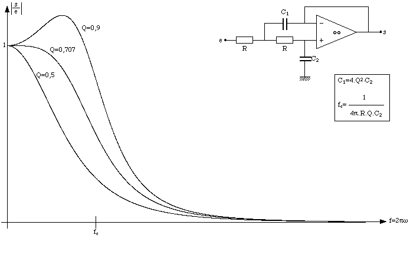

Cette opration consiste, partir des informations reues en numration binaire, produire une impulsion d'amplitude correspondant la valeur quantifie. Par ailleurs, il n'existe pas proprement parler d'opration inverse de la quantification, car ce dernier procd induit une perte d'information (toutes les valeurs que prend le signal analogique entre les instants de quantification sont perdues). Aussi, le signal analogique restitu est-il un signal en "marches d'escalier". Toutefois, l'on peut approcher le signal analogique initial en "lissant" le signal restitu, i.e. en le filtrant au moyen d'un filtre passe-bas (dont la frquence de coupure sera bien entendue de 3400Hz). Ds lors, l'on peut utiliser un montage amplificateur oprationnel (cellule de Sallen-Kay) dont le schma et la courbe de gain sont donns sur la figure 3.4.
